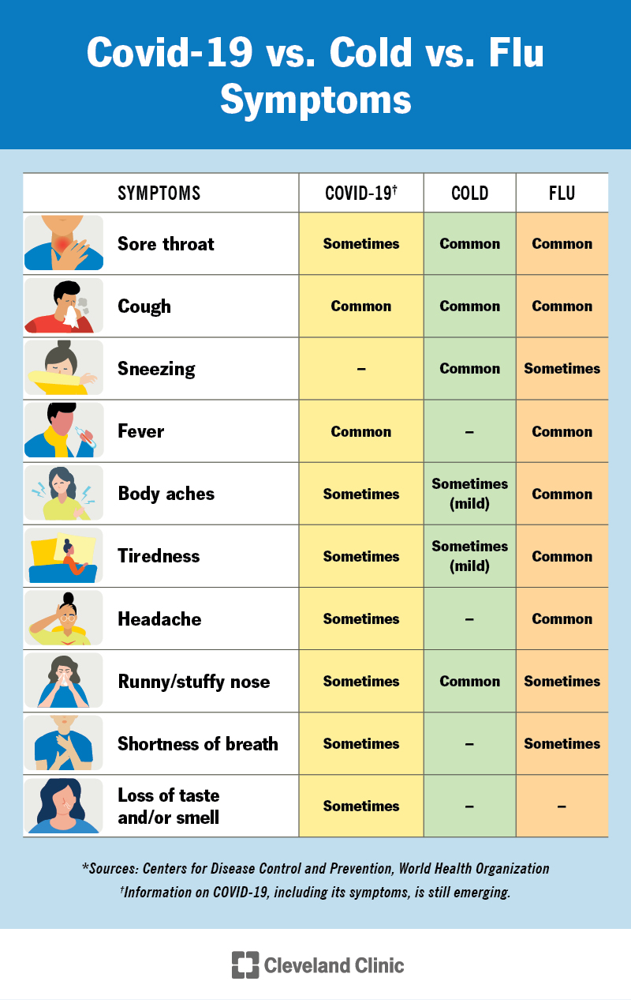

Madu lebah tanpa sengat (Meliponini / Kelulut / Klanceng) memiliki potensi bioterapi multi-target yang sangat efektif dalam membantu meredakan, memulihkan, dan menangani infeksi virus Influenza A.

Madu ini bekerja secara holistik melalui beberapa mekanisme biokimia utama:
1. Penghambatan Penempelan & Pelepasan Virus (Entry & Release Blockade)
- Menghalangi Penempelan Virus: Senyawa flavonoid seperti quercetin, luteolin, kaempferol, dan gallic acid mengikat kantong hidrofobik pada glikoprotein Hemagglutinin (HA) di permukaan virus Influenza A. Hal ini memicu perubahan konformasi yang mencegah virus mengenali reseptor sel pernapasan manusia dan menghalangi fusi membran sel.
- Menghambat Enzim Neuraminidase (NA): Senyawa fenolik madu berfungsi sebagai inhibitor kuat bagi enzim Neuraminidase virus (seperti subtipe N1) dengan mengikat situs aktif katalitiknya (residu Arg118, Asp151, Arg224, Glu276). Penghambatan ini menghentikan pemotongan asam sialat sehingga anak virion baru tidak dapat terlepas dari sel pernapasan untuk menginfeksi sel lain.
2. Penekanan Replikasi Virus Intraseluler & Efek Virusidal Direct
- Memblokir Replikasi RNA: Senyawa aktif seperti chrysin dan caffeic acid mengganggu kerja subunit RNA polimerase virus (PA, PB1, PB2) serta menghambat pembentukan protein struktural virus (seperti protein M1 dan nucleoprotein NP), sehingga proses perakitan virus baru di dalam sel terhenti.
- Efek Virusidal & Sinergi dengan Obat: Kandungan methylglyoxal (MGO) dan hidrogen peroksida (H2O2) alami memiliki sifat virusidal langsung terhadap virus Influenza A. Pemberian madu bersama obat antivirus standar (seperti oseltamivir atau zanamivir) terbukti memberikan efek sinergis hingga 100 kali lipat dan membantu mengatasi galur virus yang telah resisten obat.
3. Meredakan Badai Inflamasi & Merangsang Imunitas Inang
- Menekan Badai Sitokin (Anti-Inflamasi Paru-Paru): Infeksi Influenza A sering memicu peradangan parah akibat lonjakan sitokin. Bioaktif madu menekan jalur persinyalan NF-kappaBeta dan p38 MAPK, yang secara langsung menekan ekspresi sitokin pro-inflamasi seperti IL-6 dan TNF-alpha untuk meredakan pembengkakan serta kerusakan jaringan paru-paru.
- Mengaktifkan Gen Antiviral Alami: Konsumsi madu ini mengaktifkan jalur antioksidan Nrf2 dan memicu ekspresi gen antiviral inang seperti Interferon-Induced Transmembrane Protein 3 (IFITM3), yang bertugas memerangkap virion Influenza A di dalam endosom agar tidak lepas ke sitoplasma.
4. Mencegah Superinfeksi Bakteri & Pelapis Tenggorokan Alami
- Mencegah Infeksi Sekunder: Saluran napas yang melemah akibat virus Influenza A sangat rentan diserang bakteri sekunder (seperti Staphylococcus aureus dan Haemophilus influenzae). Sifat antibakteri spektrum luas madu ini—akibat pH asam alami (3.0–4.2), osmolaritas tinggi, serta fenolik propolis—mencegah timbulnya komplikasi pneumonia/bronkitis sekunder.
- Pereda Batuk & Sakit Tenggorokan (Demulcent Effect): Berkat viskositas dan kandungan protein/prolin alaminya, madu bertindak sebagai pelapis fisik (demulcent) yang melapisi dinding tenggorokan yang meradang, menenangkan saraf refleks batuk, dan mengurangi nyeri.
- Pasokan Energi Bertahap Tanpa Hiperglikemia: Kandungan gula langka Trehalulose (13%–57% dari total gula) berindeks glikemik rendah (Low GI) memberikan energi bertahap bagi penderita flu tanpa memicu lonjakan gula darah yang dapat memperburuk peradangan.
🍵 Dosis & Aturan Minum:
- Saat Influenza A / Batuk & Sakit Tenggorokan: Minum 1 sendok teh MURNI (tanpa dicampur air) 2–3 kali sehari, atau seduh 1–2 sendok teh dalam segelas air hangat suam-suam kuku (suhu <40°C) jika disertai dahak atau demam.
- Wajib simpan di dalam kulkas (~4°C) untuk menjaga keutuhan enzim aktif, probiotik, dan senyawa bioaktif alaminya.
Mau coba madu klanceng asli? Chat kami langsung di WhatsApp atau lihat pilihan kemasan di sini.